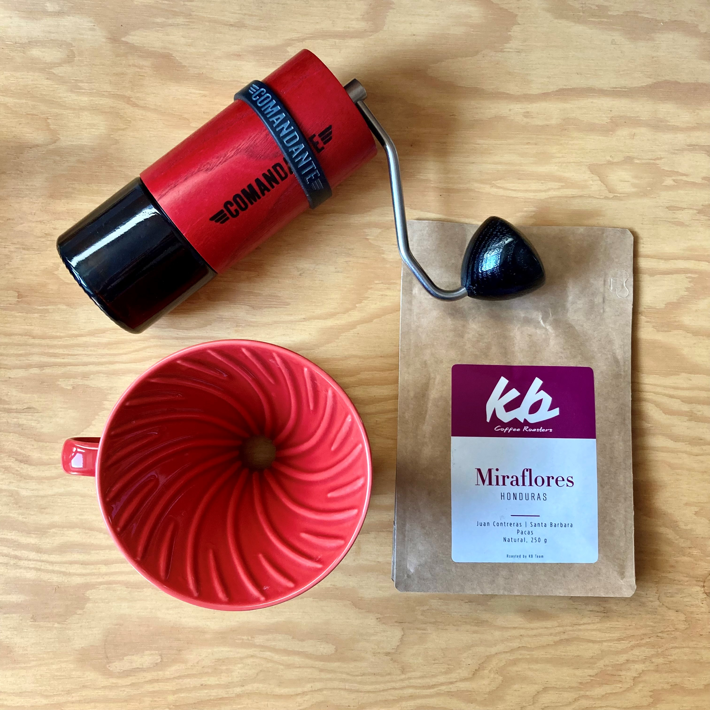
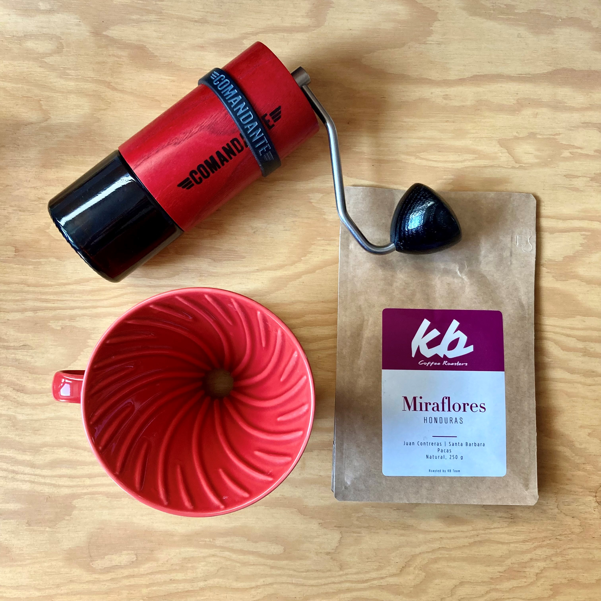
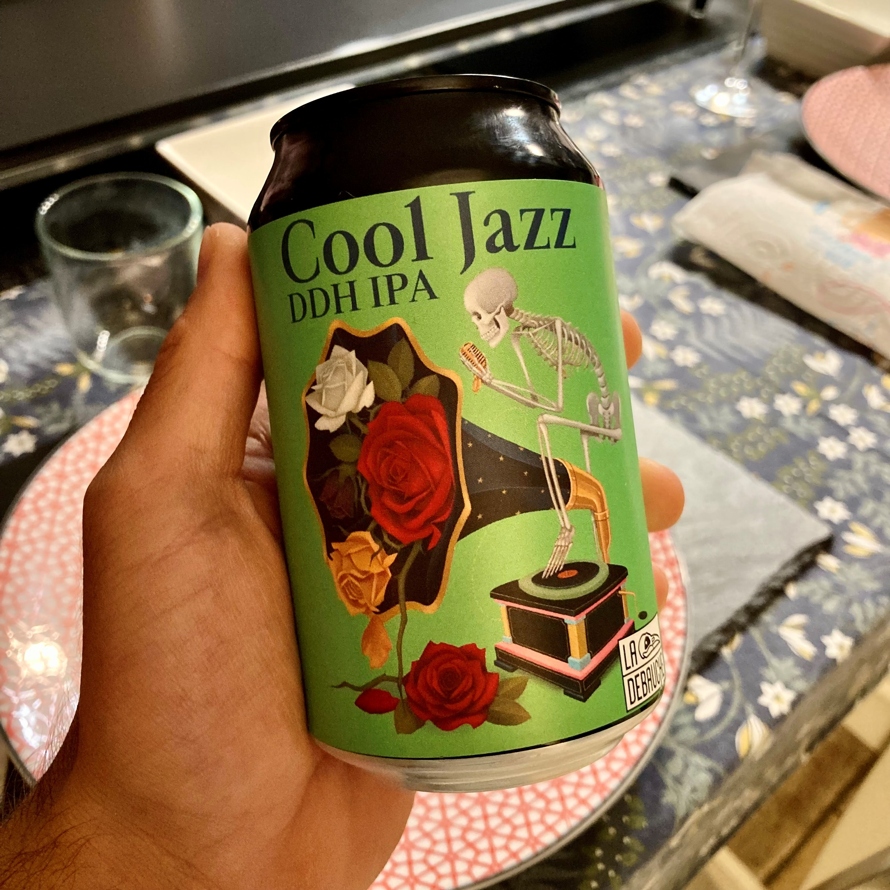
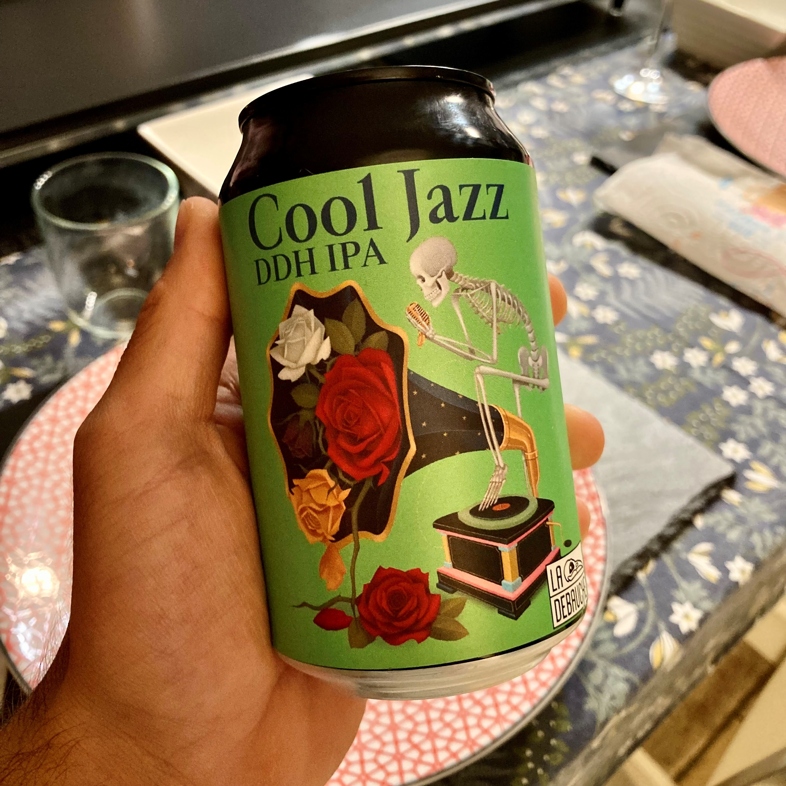
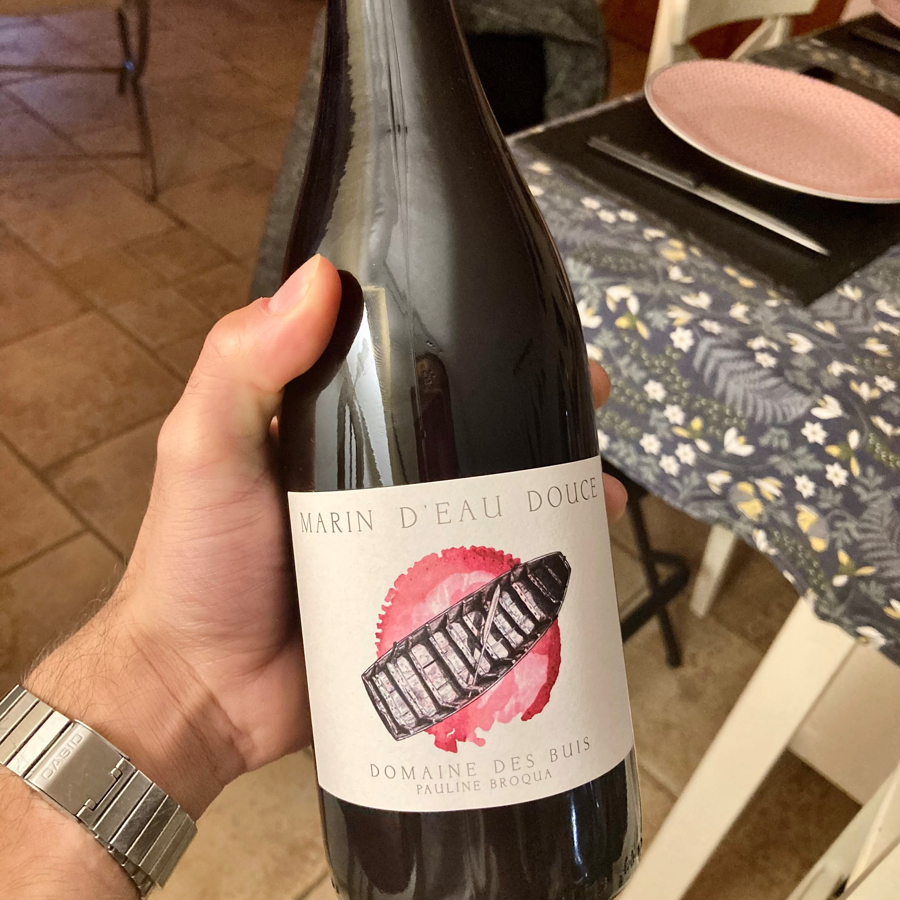
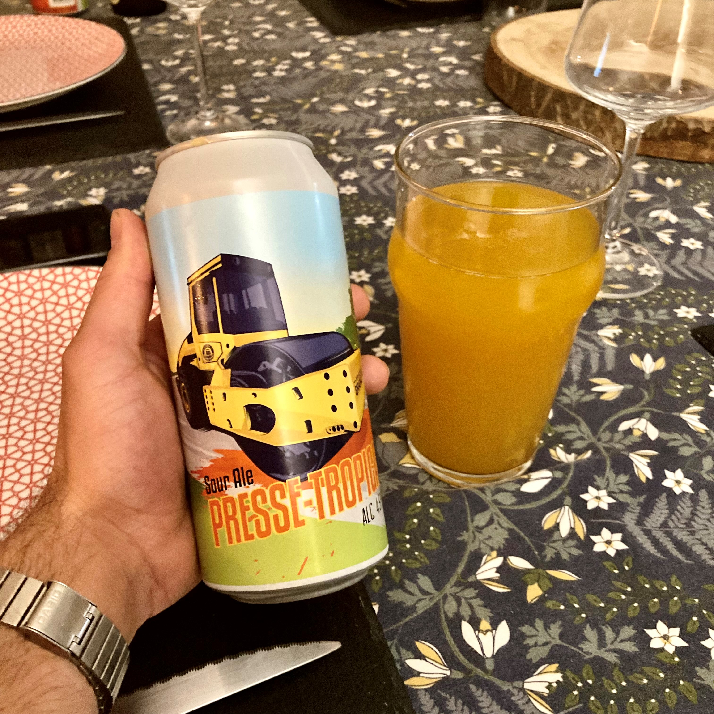
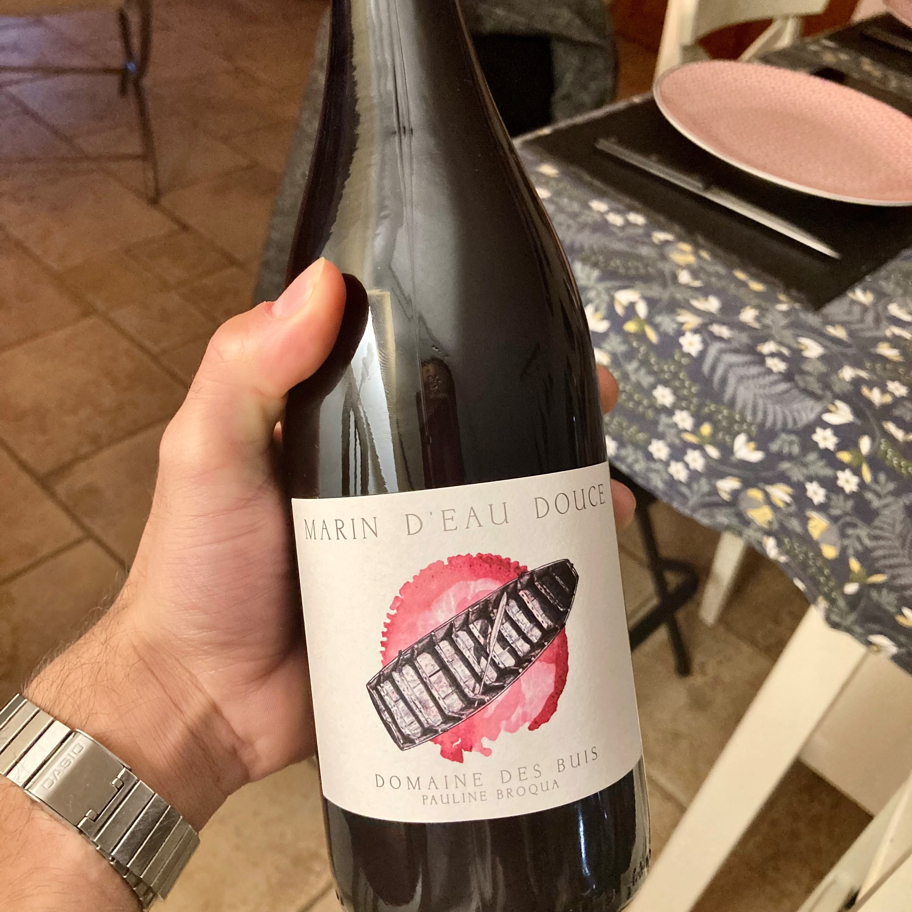
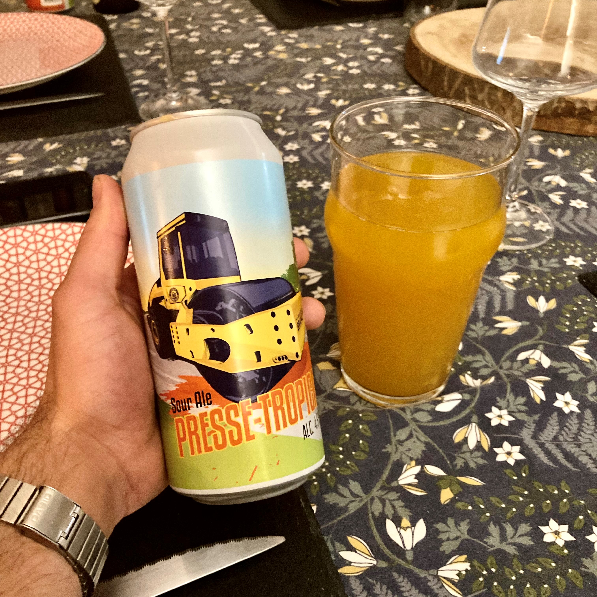

Mes passions
Découvrez ce qui me passionne en cliquant sur les photos suivantes :
Consultez mon tableur sur la composition de l'eau pour le café en cliquant sur le bouton suivant (télécharger puis ouvrir avec libre office calc de préférence) :
Cliquez ici 

 



 


